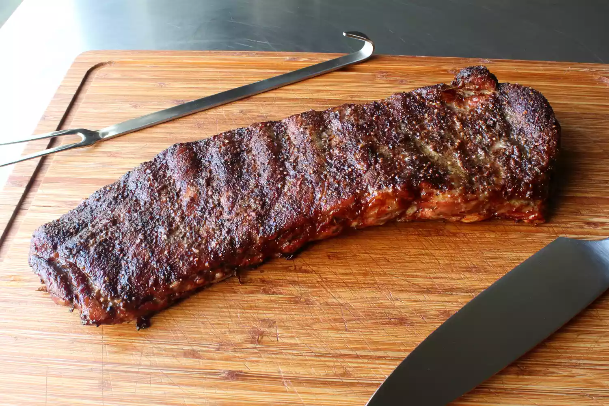

Salt and Pepper Spare Ribs

Description
This recipe for salt and pepper ribs reminded me just how delicious
pork ribs are when we don't try to do too much to them. They say
that whoever makes the most delicious thing with the fewest number
of ingredients wins, which was the idea that inspired these. Plus,
this has to be the easiest method I've ever shared for doing ribs.
Ingredients
- 4 teaspoons kosher salt
- 1 tablespoon freshly ground black pepper
- 1 teaspoon freshly ground white pepper
- 1 teaspoon cayenne pepper
- ½ teaspoon garlic powder
- 2 tablespoons white vinegar
- 2 teaspoons Dijon mustard
- 1 rack St. Louis-style pork spare ribs
Steps
-
Mix salt, black pepper, white pepper, cayenne, and garlic powder
together in a small bowl. Set spice rub aside.
- Stir vinegar and Dijon mustard together in a small bowl.
-
Place ribs on a foil-lined baking sheet. Turn the ribs over so
that the meat side is down. Use the tip of a small, sharp knife
to make some very shallow slashes every few inches through the
membrane that covers the ribs. Poke the knife 3 or 4 times
between each rib bone, about 1/4 inch deep.
-
Brush about 1/2 of the Dijon mustard mixture on top. Sprinkle
with about 40% of the spice rub. Turn the rack over and brush on
the rest of the mustard and vinegar mixture. Sprinkle on the
rest of the rub, reserving 1 or 2 teaspoons in case you want to
use it to season the cooked ribs later.
-
Refrigerate the ribs, uncovered, 4 to 12 hours before baking.
-
Preheat the oven to 300 degrees F (150 degrees C). Remove ribs
from the refrigerator.
-
Cook in the center of the preheated oven for 1 1/2 hours. Remove
from the oven and baste with the pan drippings. Continue to cook
until very tender and the tip of a knife slides in very easily,
about 1 1/2 hours more.
-
Remove from the oven, baste again, and let ribs rest for 15
minutes before cutting and serving.
Home